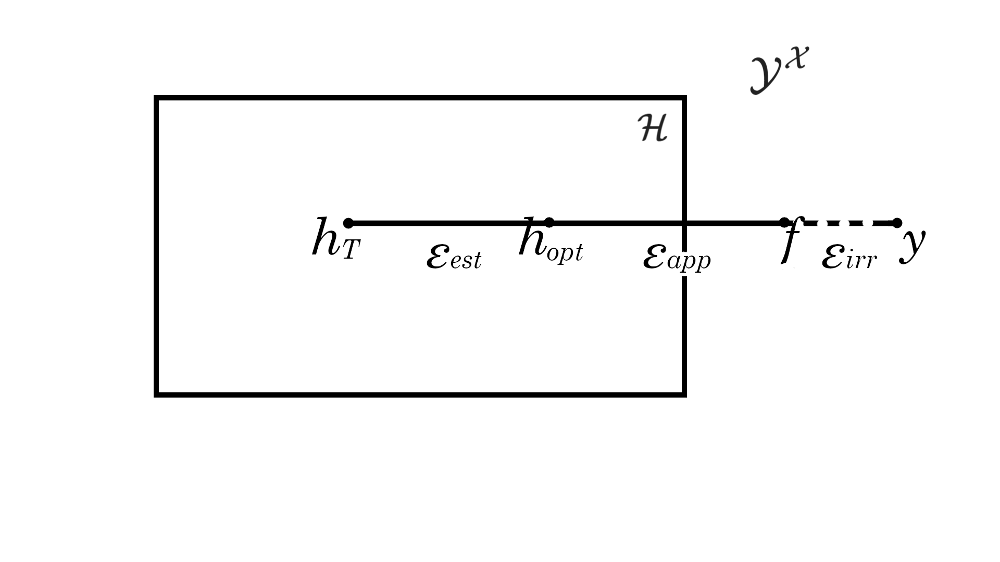

Introduction to Statistical Learning
PAC Learning - Class 7
Giora Simchoni
gsimchoni@gmail.com and add #intro2sl in subject
Stat. and OR Department, TAU
What is learnable?
Previously on Model Selection
For linear regression, squared error loss, Fixed \(X\): \[op = \mathbb{E}_{y}\left[Err_{in} - \overline{err}|X\right] = \mathbb{E}_{y}\left[\frac{1}{n}\sum_{i=1}^n\mathbb{E}_{y_0}\left[L(y_0, \hat{f}(x_i))|T\right] - \frac{1}{n}\sum_{i=1}^{n} L(y_i, \hat{f}(x_i))\right] = \frac{2d\sigma^2}{n}\]
For Fixed \(X\), for any \(\varepsilon > 0\), if \(n \ge \frac{2d\sigma^2}{\varepsilon}\), \(\mathbb{E}_{y}\left[\overline{err}\right]\) is up to \(\varepsilon\) smaller than \(\mathbb{E}_{y}\left[Err_{in}\right]\)!
Can we learn any \(f\) with any large-enough training sample, ensuring \(\overline{err}\) is up to \(\varepsilon\) smaller than \(Err = \mathbb{E}_{x_0, y_0, T}\left[L(y_0, \hat{f}(x_0))\right]\) (no overfitting)?
Spoiler: no, but learnability is key concept:
- under what conditions is \(f\) learnable from a training sample?
Learning theory ingredients
- \(x \sim P_X\) on \(\mathcal{X}\)
- Label set: \(y \in \mathcal{Y}\) (start with \(\mathcal{Y} = \{0, 1\}\))
- True relation: \(f: \mathcal{X} \to \mathcal{Y}\)
- Classifier: \(h: \mathcal{X} \to \mathcal{Y}\) (our \(\hat{f}\))
- Training data: \(T = \{x_1, \dots, x_n\}\), \(i.i.d\), where \(y_i = f(x_i)\)
- Risk function: \(L(f(x), h(x))\) (start with 0-1 loss)
- Error: \(Err_{P_X, f}(h) = \mathbb{E}_{X \sim P_X}\left[L(f(x), h(x))\right] = P_X\left[f(x) \neq h(x)\right]\)
Most startling assumption:
- Realizability: \(y_i = f(x_i)\), i.e. for \(Err_{P_X, f}(f) = 0\)
PAC Learning
Empirical Risk Minimization (ERM)
- \(\overline{err}\) is termed the empirical risk, a.k.a the training error:
\[\overline{err}_T(h) = \frac{1}{n}\sum_{i=1}^{n} L(y_i, h(x_i)) = \frac{1}{n}\sum_{i=1}^{n} \mathbb{1}\left[f(x_i) \neq h(x_i)\right]\]
A method which outputs \(h_T\) by minimizing \(\overline{err}_T(h)\) is called empirical risk minimization ERM
If \(f,h \in \mathcal{H}\), from Realizability: \(\overline{err}_T(h_T) = 0\)
Can we always find \(h\) for which \(Err_{P_X, f}(h) = 0\) via ERM (= by minimizing \(\overline{err}_T(h)\))?
Counter-example:
Probably Approximately Correct (PAC)
We introduce two relaxations:
- Accuracy \(\varepsilon\): Find \(h\) via ERM for which \(Err_{P_X, f}(h) \leq \varepsilon\) (“approximately correct”)
- Confidence \(\delta\): With probability \(\geq 1 - \delta\) (“probably correct”, on \(P_X\))
PAC learning, interim summary:
- Assume \(P_X, f\)
- Input: \(\varepsilon, \delta \in (0,1)\)
- Take i.i.d training sample \(T\) of size \(n \geq n(\varepsilon, \delta)\), where \(n(\varepsilon, \delta): [0, 1]^2 \to \mathbb{N}\)
- Output prediction rule \(h\) s.t. w.p. at least \(1 - \delta\) it holds that \(Err_{P_X, f}(h) \leq \varepsilon\): \[P_X\left[T: Err_{P_X, f}(h) \leq \varepsilon\right] \geq 1 - \delta\]
This is a definition! Importantly, no guarantee of existence, no way of finding algorithm \(A\) to minimize ERM.
No Free Lunch Theorem (NFL)
Is there an algorithm \(A\), that for every i.i.d training sample of size \(n\) from every distribution \(P_X\), there is a high chance (“probably”) it outputs a predictor \(h\) that has low risk (“approximately”)?
A “universal learner”?
Theorem (No Free Lunch, binary classification):
For any \(\delta \in (0,1), \varepsilon < 1/2\), for any learner \(A\) and training sample \(T\) of size \(n\), there exist \(P_X, f\) s.t. w.p. at least \(\delta\): \(Err_{P_X, f}(A(T)) \geq \varepsilon\)
- That is, no universal learner: no algorithm \(A\) which is “best” for any classification task.
- We can always fail a learner \(A\), with some distribution \(P_X\).
- How can we prevent such failures?
Learning in Finite Hypothesis Classes
Use Prior Knowledge
- Assume \(f \in \mathcal{H}\), where \(\mathcal{H}\) is a finite hypothesis class
- Example: “logistic regression” (not really)
- intercept and slope \(\beta_0, \beta_1\), each can take \(1K\) possibilities \(\to |\mathcal{H}| = 1M\)
- The learner knows \(\mathcal{H}\)
- ERM restricted to this class only: \(ERM_\mathcal{H}(T) \in \arg\min_{h \in \mathcal{H}}\overline{err}_T(h)\)
Theorem:
For any \(\varepsilon, \delta \in (0,1)\), if \(n \geq \frac{\log(|\mathcal{H}| / \delta)}{\varepsilon}\), then for every \(P_X, f\), w.p. at least \(1 - \delta\) over the choice of training sample \(T\) of size \(n\), \(Err_{P_X, f}(ERM_\mathcal{H}(T)) \leq \varepsilon\)
- Example: “logistic regression” (not really), for \(\delta = \varepsilon = 0.01\):
- \(\Rightarrow n \geq 800\) guarantees PAC correct: w.p. \(0.99\) \(Err_{P_X, f}(ERM_\mathcal{H}(T)) \leq 0.01\)
- Important: this says nothing about how to find \(ERM_\mathcal{H}\) or about its efficency
Proof:
We want to prove that if \(n \geq \frac{\log(|\mathcal{H}| / \delta)}{\varepsilon}\): \[P_X\left[T: Err_{P_X, f}(ERM_\mathcal{H}(T)) > \varepsilon\right] \leq \delta\]
Let \(\mathcal{H}_B\) be the set of “bad” hypotheses: \(\mathcal{H}_B = \{h \in \mathcal{H}: Err_{P_X, f}(h) > \varepsilon\}\)
Let \(M\) be the set of “misleading” samples: \(\{T: \text{ there is } h \in \mathcal{H}_B \text{ for which } \overline{err}_T(h) = 0\}\) (why?)
- Note I: \[\{T: Err_{P_X, f}(ERM_\mathcal{H}(T)) > \varepsilon\} \subseteq M\]
- Note II: \[M = \bigcup_{h \in \mathcal{H}_B} \{T: \overline{err}_T(h) = 0\}\]
Proof:
\(\begin{aligned} P_X\left[T: Err_{P_X, f}(ERM_\mathcal{H}(T)) > \varepsilon\right] &\leq P_X\left[M\right] \\ &= P_X\left[ \bigcup_{h \in \mathcal{H}_B} \{T: \overline{err}_T(h) = 0\} \right] \\ &\leq \sum_{h \in \mathcal{H}_B} P_X\left[ T: \overline{err}_T(h) = 0 \right] \quad \text{(union bound)}\\ &= \sum_{h \in \mathcal{H}_B}\prod_{i = 1}^n P_X\left[x_i: h(x_i) = f(x_i)\right] \\ &= \sum_{h \in \mathcal{H}_B}\prod_{i = 1}^n \left[1 - Err_{P_X, f}(h)\right] \\ &\leq |\mathcal{H}_B|(1 - \varepsilon)^n \\ &\leq |\mathcal{H}|e^{-\varepsilon n} \to \leq \delta \end{aligned}\)
\(\Rightarrow n \geq \frac{\log(|\mathcal{H}| / \delta)}{\varepsilon}\)
Do we believe realizability?

Agnostic PAC Learning
Agnostic PAC Learning
| PAC | Agnostic PAC | |
|---|---|---|
| Realizability | Yes | No |
| Distribution | \(P_X\) over \(\mathcal{X}\) | \(P_{XY}\) over \(\mathcal{X}\times\mathcal{Y}\) |
| Training \(T\) | \((x_1, \dots, x_n) \sim P_X \quad \forall i, y_i = f(x_i)\) | \(((x_1, y_1), \dots, (x_n, y_n)) \sim P_{XY}\) |
| \(\mathcal{Y}\) | \(\{0, 1\}\) | Any |
| Truth | \(f \in \mathcal{H}\) | not in class or doesn’t exist |
| Risk | \(Err_{P_X, f}(h) = P_X\left[f(x) \neq h(x)\right]\) | \(Err_{P_{XY}}(h) = \mathbb{E}_{P_{XY}}\left[L(h, (x, y))\right]\) |
| Probably | \(P_X\left[T: \text{Approximately}\right] \geq 1 - \delta\) | \(P_{XY}\left[T: \text{Approximately}\right] \geq 1 - \delta\) |
| Approximately | \(Err_{P_X, f}(A(T)) \leq \varepsilon\) | \(Err_{P_{XY}}(A(T)) \leq \min_{h \in \mathcal{H}}Err_{P_{XY}}(h) + \varepsilon\) |
More formally
Definition:
A hypothesis class \(\mathcal{H}\) is agnostic PAC learnable with respect to a set \(T\) from \(\mathcal{X}\times\mathcal{Y}\) and a loss function \(L: \mathcal{H}\times\mathcal{X}\times\mathcal{Y} \to \mathbb{R}_+\), if there exists a function \(n_\mathcal{H}: (0, 1)^2 \to \mathbb{N}\) and a learning algorithm \(A\) with the following property:
For every \(\varepsilon, \delta \in (0,1), n \geq n_\mathcal{H}(\varepsilon, \delta)\), and distribution \(P_{XY}\) over \(\mathcal{X}\times\mathcal{Y}\),
\[P_{XY}\left[T: Err_{P_{XY}}(A(T)) \leq \min_{h \in \mathcal{H}}Err_{P_{XY}}(h) + \varepsilon\right] \geq 1 - \delta\]
What is (agnostic) PAC learnable?
Not so fast, need two definitions:
Definition:
A training sample \(T\) is called \(\varepsilon\)-representative if: \[\forall h \in \mathcal{H} \quad | \overline{err}_T(h) - Err_{P_{XY}}(h)| \leq \varepsilon\]
Definition:
\(\mathcal{H}\) has uniform convergence if there exists a function \(n_\mathcal{H}^{UC}: (0, 1)^2 \to \mathbb{N}\), such that for every \(\varepsilon, \delta \in (0,1), n \geq n_\mathcal{H}^{UC}(\varepsilon, \delta)\), for every \(P_{XY}\) over \(\mathcal{X}\times\mathcal{Y}\): \[P_{XY}\left[T: T \text{ is } \varepsilon \text{-representative}\right] \geq 1 - \delta\]
What is (agnostic) PAC learnable?
Still not done, need “an algorithm \(A\)”:
Claim:
If \(T\) is \(\frac{\varepsilon}{2}\)-representative, then for any solution \(h_T\) of \(ERM_\mathcal{H}(T) \in \arg\min_{h \in \mathcal{H}}\overline{err}_T(h)\): \[Err_{P_{XY}}(h_T) \leq \min_{h \in \mathcal{H}}Err_{P_{XY}}(h) + \varepsilon\]
Proof:
What is (agnostic) PAC learnable? How?
Uniform convergence with \(\frac{\varepsilon}{2}\) \(\rightarrow\) \(T\) is \(\frac{\varepsilon}{2}\)-representative \(\rightarrow\) \(ERM_\mathcal{H}(T)\) gets PAC bound
Corollary:
- If \(\mathcal{H}\) has uniform convergence with a function \(n_\mathcal{H}^{UC}\) with some \(\frac{\varepsilon}{2}\) then \(\mathcal{H}\) is agnostic PAC learnable, with \(n \geq n_\mathcal{H}(\varepsilon, \delta)\)
- Furthermore, \(ERM_\mathcal{H}(T)\) is a succesful PAC learner for \(\mathcal{H}\)
Finite Classes are Angnostic PAC Learnable
What has uniform convergence?
Theorem:
Assume \(\mathcal{H}\) is finite and the range of the loss function is bounded in \([0, 1]\). Then:
- \(\mathcal{H}\) has uniform convergence with function \(n_\mathcal{H}^{UC} \leq \Bigl\lceil\frac{\log(2|\mathcal{H}|/\delta)}{2\varepsilon^2}\Bigr\rceil\)
- Therefore, \(\mathcal{H}\) is agnostic PAC learnable using the \(ERM_\mathcal{H}\) algorithm with sample size \(n \geq \Bigl\lceil\frac{2\log(2|\mathcal{H}|/\delta)}{\varepsilon^2}\Bigr\rceil\)
Comments:
- Use the Hoeffding’s Inequality:
- Let \(X_1, \dots, X_n\) in \([a, b]\) i.i.d RVs with \(\mathbb{E}(X_i) = \mu\), then for any \(\varepsilon > 0\): \[P\left[|\bar{X} - \mu| > \varepsilon\right] \leq 2\exp\left(-2n\varepsilon^2/(b - a)^2\right)\]
- So the loss can be bounded in any range
Linear Model PAC Learnability
- Now suppose \(y_i = f(x_i) + \tau_i\), specifically \(y_i = \beta_0 + \beta_1x_{i1} + \dots \beta_px_{ip} + \tau_i\)
- Suppose our squared error loss can be bounded (in \([0, 1]\), but can manage \([0, a]\) for some large \(a\))
- What is \(\mathcal{H}\)? Is it finite?
- Discretization Trick: if every coefficient \(\beta_j\) is represented as a 64 bit float:
- Let \(d = p + 1\)
- \(|\mathcal{H}| = 2^{64d}\)
- We reach agnostic PAC learnability for any \(\varepsilon, \delta \in (0,1)\)!
- With \(ERM_\mathcal{H}(T) = \hat{\beta} = (X'X)^{-1}X'y\)
- \(n \geq \Bigl\lceil\frac{2\log(2|\mathcal{H}|/\delta)}{\varepsilon^2}\Bigr\rceil \approx \frac{128d + 2\log(2/\delta)}{\varepsilon^2}\)
- Compare this to the Fixed-\(X\) optimism bound: \(n \geq \frac{2d\sigma^2}{\varepsilon}\)
The Bias-Complexity Tradeoff
The Bias-Complexity Tradeoff
Let \(h_T\) be the model reached by \(ERM_\mathcal{H}(T)\), that is: \(h_T \in \arg\min_{h \in \mathcal{H}}\overline{err}_T(h)\).
Its “true” error over unseen data: \(Err_{P_{XY}}(h_T)\)
The actual minimum error achievable in \(\mathcal{H}\): \(\min_{h \in \mathcal{H}} Err_{P_{XY}}(h)\)
So: \(Err_{P_{XY}}(h_T) = \min_{h \in \mathcal{H}} Err_{P_{XY}}(h) + \tau = \varepsilon_{\text{app}} + \varepsilon_{\text{est}}\)
The Bias-Complexity Tradeoff
\[Err_{P_{XY}}(h_T) = \varepsilon_{\text{app}} + \varepsilon_{\text{est}}\]
- Approximation Error \(\varepsilon_{\text{app}}\):
- Caused by restricting class \(\mathcal{H}\)
- Does not depend on \(T\)
- Decreases with \(|\mathcal{H}|\)
- Model bias!
- Estimation Error \(\varepsilon_{\text{est}}\):
- Caused by ERM with specific \(T\)
- increases (logarithmically) with \(|\mathcal{H}|\), decreases with sample size \(n\)
- Model complexity (our “variance”)
Where did “irreducible” go?
- Recall: \(Err_{P_{XY}}(h_T) = \min_{h \in \mathcal{H}} Err_{P_{XY}}(h) + \tau = \varepsilon_{\text{app}} + \varepsilon_{\text{est}}\)
- The \(\min_{h \in \mathcal{H}} Err_{P_{XY}}(h)\) could be decomposed itself to: \[\min_{h \in \mathcal{H}} Err_{P_{XY}}(h) = \min_{h \in \mathcal{Y}^\mathcal{X}} Err_{P_{XY}}(h) + \left[\min_{h \in \mathcal{H}} Err_{P_{XY}}(h) - \min_{h \in \mathcal{Y}^\mathcal{X}} Err_{P_{XY}}(h)\right]\]
- That is, the best possible (“Bayes optimal”) error for any \(\mathcal{H}\) + excess over that which is what we know as bias
- Under realizability \(\min_{h \in \mathcal{Y}^\mathcal{X}} Err_{P_{XY}}(h) = 0\)
- Under agnostic model it could be \(> 0\), like our \(\sigma^2\)